Chat and search with conversational AI. Read with Gemini Notebook. Work on files with an Agent. Start with your situation, and look up unfamiliar terms as you go.
Use one you know to understand concepts, write, discuss and find information.
ReadGemini Notebook
Formerly NotebookLM
Ask about your readings and lectures, then follow citations back to the source.
ActAgent
Codex or Claude Code can work on tasks in your folder.
RememberProvide materialState your goalCheck the result
01Keywords
No definitions to memorise. Start with the core concepts; look up the other terms when needed.
Core concepts
Understand these and use them in the activities that follow.
PromptYour instructions
The question, task and requirements you give to AI.
In practice State your goal and provide relevant material. If the answer is not useful, explain what needs changing.
See an example: Prompt
You may hear “adjust the prompt”. Instead of “read this for me”, try “I do not understand paragraph two; explain it with an example”. Add the missing information, rather than simply making the prompt longer.
ContextAvailable information
The information and material the model can use for this response.
In practice Provide important source passages and check what the tool actually read. Do not assume it has seen your files.
See an example: Context
You may hear “the context is too long”. Capacity is limited, and long conversations may lose detail. When starting a new conversation, check the summary you carry over and provide important sources and requirements again.
Silent illustration; press play to watch. Fictional content.
Hallucination
An answer that sounds convincing but is incorrect or unsupported.
In practice Check the claims and key figures you intend to use against the original sources.
See an example: hallucination
Examples include invented papers, incorrect numbers and fake links. Check important facts against the original source. A citation is useful only if the source actually supports the claim.
Silent illustration; press play to watch. Fictional content.
AgentAI that takes action
AI that uses tools, carries out steps and continues based on the results.
In practice Set the scope, keep the original files and check the output afterwards.
See an example: Agent
An Agent might turn several course documents into an assignment list, save it and check it. Specify which files it may work on, then open the result and verify it.
More termsAI / Generative AI / LLM / Training / Multimodal / Token
Look these up when you encounter them; no need to read them all now.
AIArtificial intelligence
An umbrella term for technologies that perform tasks such as recognition, prediction and generation.
See an example: AI
“This software has AI” is a broad claim. Ask what it can actually help you do. Generative AI is one category within AI.
Generative AI
AI that produces content such as text, images and audio.
See an example: generative AI
University policies may use the term “generative AI”. It can include both chat and image generation. Producing content does not mean that content is correct.
LLMLarge language model
A model that processes and generates language, at the core of many chat tools.
See an example: LLM
LLM stands for Large Language Model. “Which LLM does this app use?” refers to its underlying model. The app may also provide tools for searching or reading files.
TrainingUpdating the model
Using data to update the model itself and change its behaviour. Pasting background or documents into a chat supplies context; it is not training.
See an example: Training
Telling Gemini “I am an urban planning postgraduate; explain GIS for a beginner” provides context for the current task. Training or fine-tuning involves actually updating the model itself using data.
Multimodal
The ability to work with more than one kind of material, such as text, images or audio.
See an example: multimodal
“Multimodal support” might mean that AI can read a photo of your lecture notes or listen to a recording. Supported formats vary by tool; check that it interpreted your material correctly.
TokenUnits of content
A unit used to process content. Text is split into characters, words or fragments.
See an example: Token
A “token limit” usually refers to the amount of content a model can handle. You do not need to count tokens yourself. Read the actual limit message: file size and subscription usage can have separate limits.
Silent illustration; press play to watch. Fictional content.
02Situations
Find a situation close to yours and see how to get started.
Understand and find informationExplain a passage, compare readings or find policy sources
Start by giving a conversational AI the passage you are struggling with. Use Gemini Notebook for repeated work with the same readings, lecture notes or recordings. When searching, ask for original sources.
Choose an answer in your head, then open the explanation. There is nothing to memorise.
Your lecturer assigns 15 papers to compare. Which tool would you start with?Conversational AI / Gemini Notebook / Agent
Why: Gemini Notebook. The task centres on reading, comparing and checking a selected set of sources. You do not need an Agent to operate on files. Still open the original passages to check that they support your claims.
You paste your CV, background and assignment requirements into Gemini. Are you “training AI”?Training / Context
Why: you are providing context. You are telling an existing model what to use for this task. This does not itself retrain the model.
AI gives you a paper citation and an impressive figure of 18%. What next?Cite it directly / Check the original / Ask another model
Why: check the original source. A citation does not necessarily support the whole sentence. Check the authors, year, number, study population and meaning before using it.
You have CSV and GeoJSON files and want cleaned data, charts and new output files. Which mode fits?Chat / Gemini Notebook / Agent
Why: an Agent. You need AI to work on files. Keep the raw data, define the scope, ask it to explain its method and check its output.
Tool names change. This chapter first separates the three layers of an AI tool, then tells apart generating, searching, calculating and operating on files; each needs a different check.
HarnessDecides how the AI worksWhether it can search the web, read and write your files, and ask before acting. A harness is horse tack: the model supplies the power, the harness sets the direction.
Model (LLM)Which AI brain it usesGPT-6 Astra, Claude Opus 5, Gemini 3.8 Flash and others; versions change every few months, so there is no need to memorise them.
Same AI brain, different harness, different tool. The same Gemini models chat and search the web in Gemini, answer mainly from your sources with citations in Gemini Notebook, and read and write files and run code in Antigravity. The opening's “chat and search, read, act” differ mainly in the harness.
What is AI doing right now?
Type of work
Example
What to check
GenerateWrite from learned patterns and supplied material; fluent answers can still be invented
Explain a concept, rewrite a sentence or draft an email
Check important facts against the original; make sure summaries preserve the meaning
SearchRetrieve web pages with a search tool, then synthesise an answer
Current announcements, original policies or recent figures
Open sources to check dates and applicable regions. Ask for missing sources; do not treat the answer itself as verification
CalculateUse a calculator, spreadsheet or code to compute values
Add up a budget, convert rents or calculate proportions
Check inputs, formulas and units; work through one example yourself. Code can run successfully and still calculate the wrong thing
OperateUse tools to read and write files, run code and carry out multi-step tasks
Clean a CSV, generate charts or process files in batches
Define the scope, retain originals, inspect changes and verify the output
04Prompts and task instructions
Start with a goal and relevant material. These two builders help you identify missing information. Try a short version first, then add what the response needs. You do not have to fill every field or follow a fixed order.
When needed:Context vs Training
Context is the background and material available for this task. Pasting a CV, assignment instructions or documents normally provides context. Training uses data to update the model itself.
You can start even if your goal is unclear: “I want to [goal], but I am stuck on [difficulty]. Ask me one question to help clarify my next step.”
Edit and copy your prompt
Edits last for this visit; refreshing restores the examples. Copy your finished text before leaving.
Follow up and revise
Problem
What to say next
Too difficult
“I do not understand this sentence: [paste sentence]. Explain it with one concrete example, keeping important technical terms.”
Too vague
“Based on my material, identify three specific things to improve and explain why.”
Wrong direction
“I need to compare two options, rather than describe each separately. Make a comparison table covering cost, time and constraints.”
A step failed
“I want to [goal], using [software and version]. I tried [steps] and got [exact error]. Help me identify the cause, then give me one small step I can verify.”
Conversation is cluttered
“Summarise this conversation: my goal, confirmed conclusions, material I supplied and the next step. Include facts only.” Check the summary before pasting it into a new chat, and provide important source passages and files again.
Long material: separate instructions from the source
Write what you want AI to do, then label the material clearly as “Source text” or “Data”. Special symbols are optional; a clear boundary between instructions and material is what matters.
05Reading and source verification
Use Gemini Notebook (formerly NotebookLM) to ask about lectures and readings. Try the four steps with this short passage, then explain which conclusions are supported. A one-page text can also be pasted directly into conversational AI.
Here, Gemini means general chat; Gemini Notebook means the notebook tool for working with selected sources.
[1] A library extended its evening opening hours for four weeks. During the trial, evening visits rose from 120 to 180 per week.
[2] In a voluntary survey of 40 visitors, 30 said the later closing time helped them study. The survey did not include people who did not visit the library.
[3] Staff recommend continuing the extended hours. However, the trial took place during exam season, and no comparison library was studied. The results do not establish whether longer opening hours improved students’ grades.
Read and verify
Create a notebook and add the passage as a copied-text source. Try the questions below and check important conclusions against the original. A short source may be cited as a whole; use paragraph numbers [1]–[3] to locate the evidence yourself.
Purpose
Try asking
Check against the passage
1 Get the gist
“Using only this passage, explain what happened and what the authors recommend in two sentences. Do not add external information.”
Evening visits rose during extended hours; staff recommend continuing. This is not proof of a causal effect.
2 Explain a difficult point
“What is a voluntary survey? Why does excluding non-visitors affect interpretation?”
Volunteers may differ from non-respondents; the result cannot directly represent all students.
3 Separate claims and evidence
“List the recommendation, supporting data and limitations, with paragraph numbers for each.”
Recommendation: [3]; visits: [1]; survey: [2]; exam season and no comparison library: [3].
4 Check the original
“Does the passage prove that longer hours improved grades? Point to the text; do not speculate.”
[3] explicitly says this conclusion is not established. Check words such as “caused”, “improved” and “proved”. If AI says grades improved, reply: “Paragraph 3 says this was not established. Revise the summary and separate observed changes from unproven causes.”
Interpreting evidence
First consider whom a percentage represents, then check a claim against the original PDF. Expand these exercises when useful; you need not do them all at once.
Samples and generalisationWhom does the percentage represent?
Think first: Of 40 visitors who volunteered for a survey, 30 said later closing helped them study. Can you write “75% of students support longer opening hours”?
Fictional teaching material. Silent animation; play, pause or view full screen manually.
Explain in your own words: Who is the denominator in 75%? What else would you need to know about the views of all students?
Explanation and suggested answer
The 40 circles represent the visitors who volunteered. The 30 coloured circles represent those who said later closing helped them study. The other ten responses are not specified in the passage.
30 ÷ 40 = 75%. This describes these respondents, not necessarily visitors who did not respond or students who did not visit.
Write: “Of 40 surveyed visitors, 30 said later closing helped them study.” To understand the whole student population, you would need a more representative survey covering different groups.
In your own work: Ask AI to identify the study population, how the sample was selected and who was excluded. Then check the source.
Check a claim in the original PDFA citation exists ≠ the claim is supported
Lin, M., & Carter, J. (2026). Evening Library Hours Pilot: A Teaching Brief. Urban Learning Methods Lab.
Citation.js formats known metadata in APA style. A well-formatted reference does not mean the source supports your sentence.
Check your answer
Page 2 supports an increase in evening visits during the four-week trial and reports surveyed visitors’ views on later closing.
It explicitly says that academic performance was not collected or analysed, and that there was no comparison library or control group.
The citation and page number can be real while “improved academic performance” goes beyond the evidence. Try: “Evening visits rose during the four-week trial; the study did not test effects on grades.”
This PDF was created for this site as fictional teaching material, not real research. Use it to practise checking whether a citation supports a claim.
Put it together
Without looking at the answers or asking AI first, consider: “75% of students support longer hours, and longer hours improved grades.” Where does this exceed the evidence? Rewrite it in your own words and say what further data is needed.
Answer first, then check
Combine the two exercises: 75% describes only 40 voluntary visitor respondents, and the source does not establish improved grades. Generalising requires a more representative survey; assessing grades requires performance data and a comparison design.
Try a passage from your own reading. Separate what was observed from what cannot yet be claimed. Ask AI to challenge your interpretation, then use the source to decide whether to revise it.
Organising a literature notebook
One purpose per notebookUse one notebook for a course syllabus, lectures and assigned reading; another for an assignment’s relevant literature. Avoid putting everything in one notebook.
Add sourcesStart with relevant PDFs, documents or text you are permitted to upload. Check permission to record and upload audio. You do not need to gather everything before starting.
Check what it readConfirm source names and spot-check important passages, tables and scanned pages. A summary alone cannot tell you whether pages were missed.
Three useful questionsExplain this passage; compare sources on the same question; find passages related to a concept. Search the original text as needed. The prompt library includes comparison and passage-finding examples.
Spot-check citationsPrioritise claims you will use, key numbers and surprising conclusions. Check whether the source supports the entire sentence and whether conditions were omitted.
References and citation styles
Get bibliographic details from the original paper or publisher, then ask AI to help check the required citation style. Do not let it invent missing authors, dates or titles. Gemini Notebook citations help you navigate sources; formal references still need full bibliographic details.
Other Gemini Notebook outputs, when needed
Audio overviews, mind maps, infographics, slides and reports can support revision or presentation. Features change; choose one that helps, then check important content against the sources.
Chapter 09 includes editable examples for customising audio overviews, infographics and slides.
06Agent tasks
An Agent can work inside your folder. You do not need to code, but you do need to define the scope and check the result. Watch the walkthrough, then try a task.
When needed:What is an Agent?
It can read files, use tools, execute steps and continue based on results. Define the scope, preserve original files and verify the output.
Example scenario: You have three course PDFs with assignment requirements on different pages. You want a date-sorted table with source page numbers. Select “Next step” to see how AI might prepare it.
Ask for advice
“How could I organise assignment deadlines?”
You get suggested columns and a method, then open the files, copy the information, sort it and save it yourself.
It did not wait for you? Stop it first, then ask for a list of changes already made. Check originals and outputs before deciding what to keep, fix or restore from backup. It says “Done”? Open the actual files and check them.
Choose a tool
Codex or Claude Code can work here. Use whichever is available; you do not need to learn both interfaces at once.
Task walkthrough
A fictional demonstration: these buttons do not read files or connect to AI.
One company, five forms
Each company puts its AI models into several interfaces. The model is the AI brain from chapter 03; the other four are where you interact with it. Tap a picture to enlarge it.
AI model (LLM)The AI brain. Each company has several, and versions change often.
WebChat in a browser. It sees only what you paste or upload, and gives you an answer to copy or download yourself.
Desktop app (Agent)An Agent installed on your computer. It opens your folder, reads and edits files and runs code, and asks before it acts.
IDEInside a code editor such as VS Code, for people who write code.
Command line (CLI)Typed commands in a black terminal window, for people who write code.
Family
AI model
Web
Desktop app (Agent)
IDE
Command line
ChatGPTOpenAI
GPT-6 AstraGPT-5.6 Sol
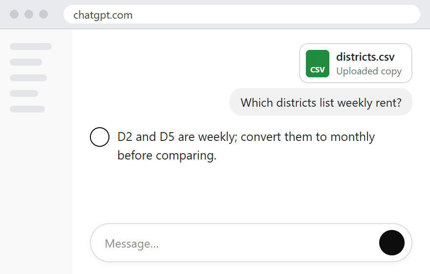
ChatGPT
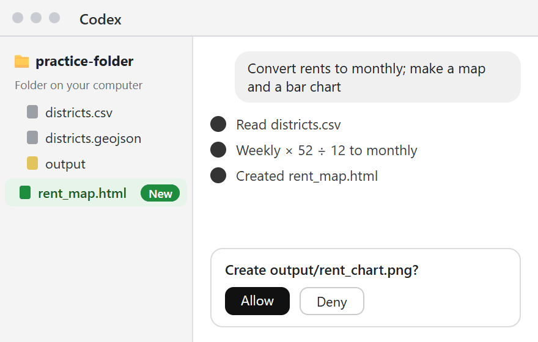
Codex desktop app
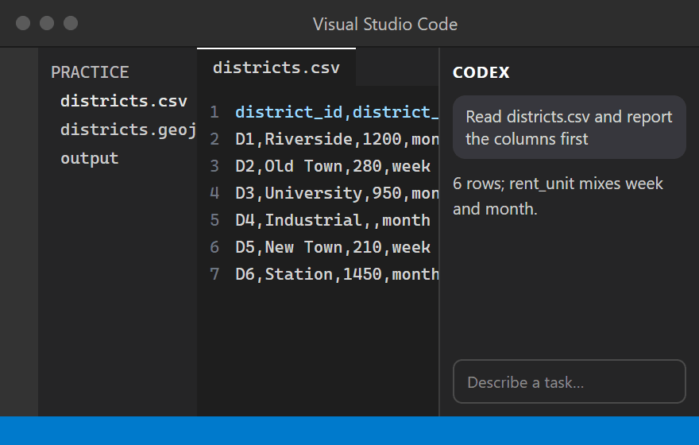
Codex + VS Code
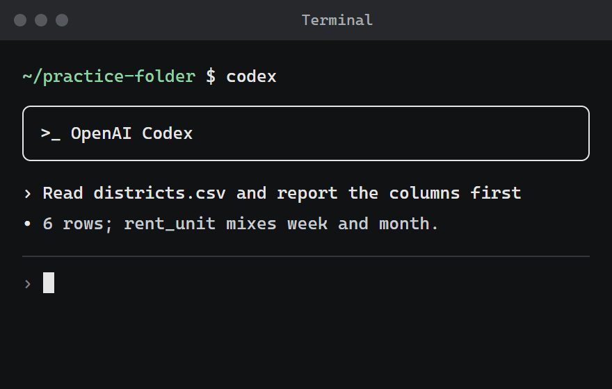
Codex CLI
ClaudeAnthropic
Claude Fable 5.1Claude Opus 5Claude Sonnet 5
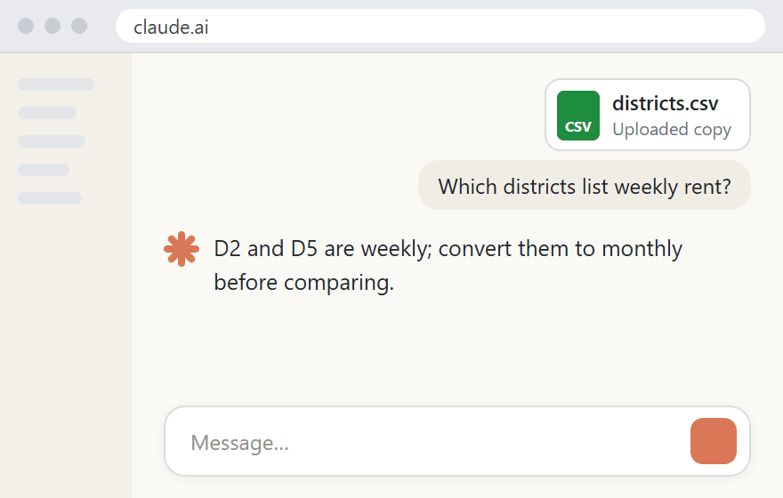
Claude
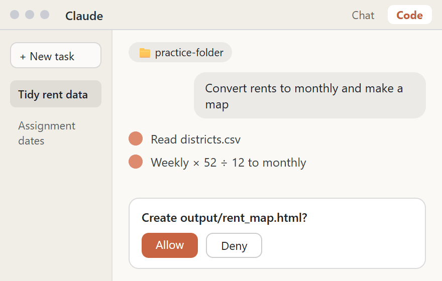
Claude Code desktop app
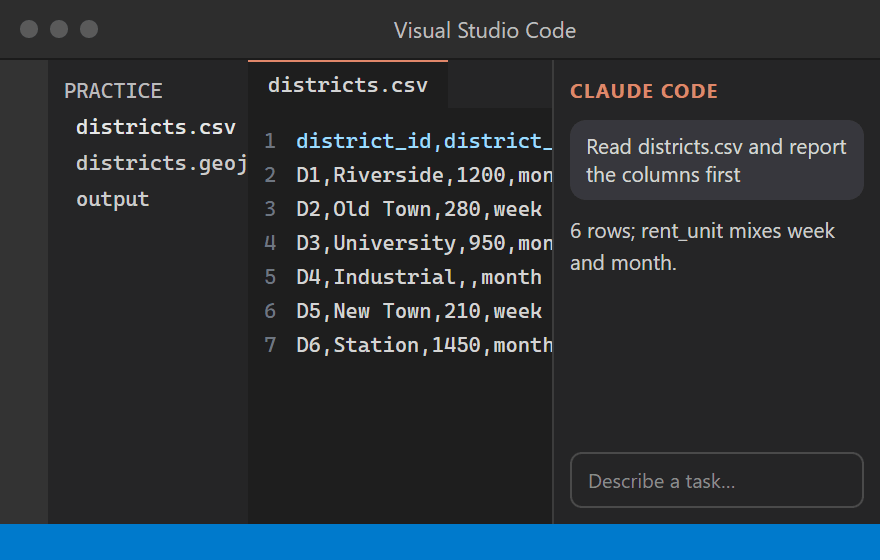
Claude Code + VS Code
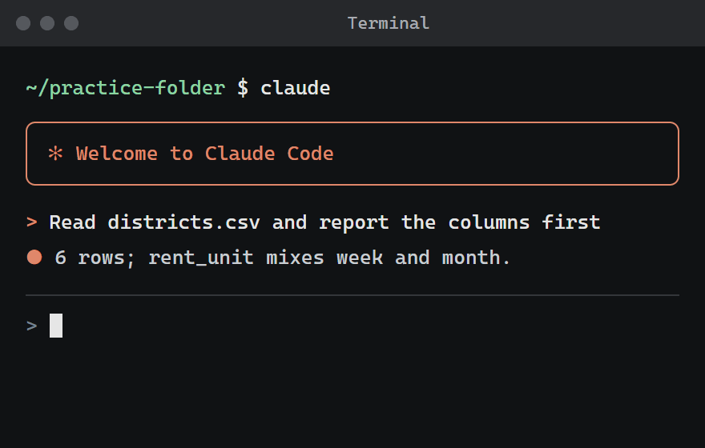
Claude Code CLI
GeminiGoogle
Gemini 3.1 ProGemini 3.8 Flash
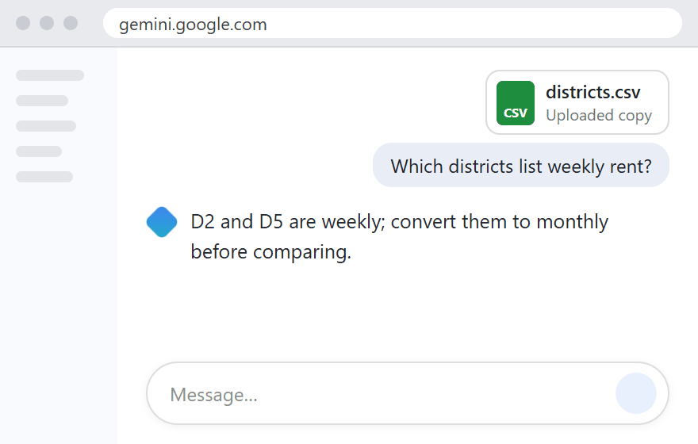
Gemini
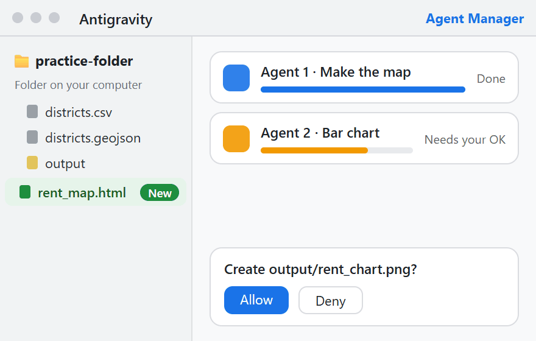
Antigravity desktop app
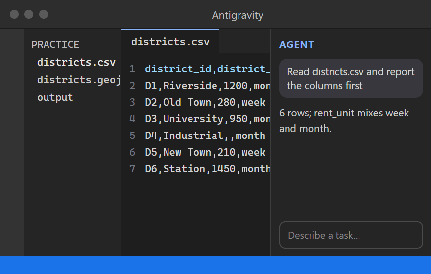
Antigravity IDE
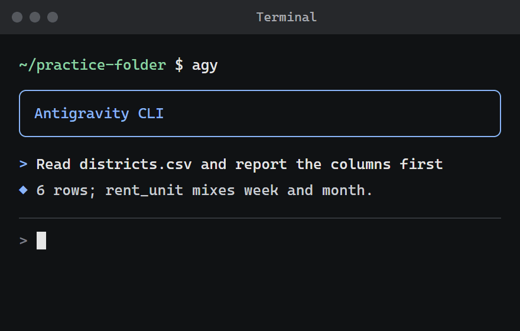
Antigravity CLI
ChatGPT, Claude and Gemini also have desktop chat apps that chat just like the web versions; in this table, desktop means the Agent app that works in your folder.
What you will use: the web version or phone app for chat and search, and the desktop app for the Agent (the two in green). The IDE and command-line versions are the same tools with another interface; if a tutorial shows VS Code or a black window, it is still the same tool.
The pictures are illustrations, not each company's real screens; interfaces change often, so go by the version you open. Model names checked in September 2026; after that, go by the model menu in each tool.
On your phone, you can review the workflow, edit instructions and copy them. For the folder exercise below, use Codex or Claude Code on your Mac.
Three steps for any Agent
Set the working scopeStart with a practice folder. For real tasks, keep a backup of originals outside the working scope.
Check permissions and the first stepSpecify which files it may read or change. Initially, request inspection and a report only.
Review changes and outputsInspect changed files, open the output folder and check key figures. Trust the actual files, not just “Done”.
Interface names change; the method remains. Official installation links: Codex, Claude Code.
Ask AI to visualise rent data
You want to compare rents across six districts, but only have a table. In this example, Codex or Claude Code reads the data, standardises rent units and creates charts. You explain the requirements and check the result.
You will get: A cleaned rent table, a comparison bar chart and a schematic map coloured by rent. The data and districts are fictional.
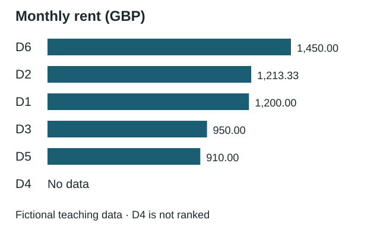
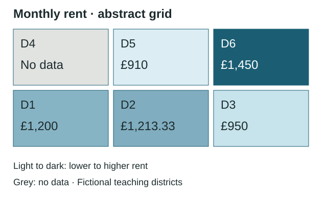
Illustration based on this exercise. Your Agent generates the actual output; D4 should be marked “No data”.
Prepare the material
Create a practice folder on your computer and download the three files below into it. Extract the bundle if needed, then open the folder in Codex or Claude Code. The files are ready; you do not need to learn these formats first.
Expand and copy the instructions below into the Codex or Claude Code conversation. Ask it to inspect the material and report first, then wait for your confirmation before creating the output.
Show task instructions
Task instructions · paste into Codex or Claude Code
# Goal
Standardise the rents in districts.csv to monthly amounts. Create a map coloured by monthly rent and a bar chart that I can open in a browser.
# Material and scope
Work only with districts.csv and districts.geojson in this folder. The coordinates form an abstract grid; no basemap is needed.
# What may change
Do not modify the original files. Put all output in an output folder. Preserve missing values; do not guess replacements.
# First step
Only read the files and report columns, row counts, units, missing values, and whether district_id matches between the CSV and boundary file.
# When to wait
Stop after reporting. Wait for me to confirm the approach before proceeding.
# Acceptance criteria
Input and output must both have 6 rows. Convert weekly rent × 52 ÷ 12 to monthly rent, rounded to two decimals. Add rent_monthly_gbp and retain original columns. Mark missing data on the map. List every transformation when finished.
It should find six districts, a mix of weekly and monthly rents, and missing rent for D4. Confirm it will use monthly rents, retain missing values and preserve originals, then reply “Please proceed”. If its report differs, ask it to recheck the data first.
Open the results
When finished, ask how to open the charts in the output folder. Check that rents are comparable and missing data is clearly marked. Expand the reference results below when you need to check the numbers.
Show reference results
Expected results for this example
Check
Expected result
Input / output rows
6 / 6; no silently deleted rows
D2: £280 per week
280 × 52 ÷ 12 ≈ £1,213.33 per month
D5: £210 per week
210 × 52 ÷ 12 = £910.00 per month
D4: missing
Both rent fields remain missing; map shows “No data”
Original columns
All retained; rent_monthly_gbp added
Map colour order
D6 > D2 > D1 > D3 > D5; D4 has no data
Original files
Unchanged; results in the output folder
Data interpretation and limits
These two exercises use the same rents and abstract grid. Predict the effect of a processing choice, inspect the chart, then explain how you would check AI’s output.
Units and comparisonsUse the same basis for comparison
Think first: Old Town D2 is £280 per week; Riverside D1 is £1,200 per month. Which is cheaper?
Try itThe same two records; only the unit conversion changes.
Loading interactive chart…
Not directly comparable. 280 is weekly; 1,200 is monthly. Different numbers do not mean D2 is cheaper.
Check the conversion
Here, weekly rent × 52 ÷ 12 gives average monthly rent: £280 per week is about £1,213.33 per month. Check the original units, formula and retained columns, then calculate one record yourself.
Missing data on mapsUnknown is different from zero
Think first: D4’s rent is blank. If AI fills it with 0 and colours the map by rent, what misleading impression could that create?
Fictional data on the original GeoJSON’s abstract grid. All rents in the animation are monthly.
Explain in your own words: Can we say D4 is cheapest? How should the legend and ranking distinguish missing data from zero rent?
Explanation and suggested answer
Each rent joins to a district using district_id. D4 has no rent value. A light-to-dark scale represents lower-to-higher rents, with values also labelled on the map.
The incorrect example replaces the blank with 0, making D4 appear to have the lowest rent.
Keep the missing value. Show D4 in grey with “No data”, explain it separately in the legend and exclude it from the rent ranking.
In your own work: Ask AI to retain all six rows, avoid guessing values and distinguish missing from zero. Check district IDs, values, the legend and the missing-value count.
Try itThe same data; only the treatment of D4 changes.
Loading interactive chart…
No data ≠ 0. “No data” means unknown; 0 is a known value.
Put it together
Answer first: “Is the cheapest district the best place for students?” Say what this data can tell you and two other things you need to know. Then ask AI whether you missed any important conditions.
Answer first, then check
This fictional data only compares listed rents after unit conversion. Suitability also depends on commuting, housing size and quality, and personal needs. Without income data, it cannot establish affordability. D4 is unknown, not zero or cheapest.
Next, try your own small task. Write the goal, materials, permitted changes and checks. Ask the Agent to report its understanding before deciding to proceed. Choose acceptance criteria that fit your purpose.
Without an Agent subscription, watch a complete demonstration on a family member’s computer, then paste the six records into conversational AI to practise describing processing rules and checks.
07Choosing and making diagrams
Use this section when you need a diagram. Start with one type and ask: What relationship am I trying to show? Each of the six tabs names a relationship it can represent.
Describe your needs in plain language
Example code AI might give you
Fictional examples, pre-rendered with Mermaid.
Create a diagram
1Describe the content
One step or component per sentence. Describe loops as “if …, return to …”.
2Ask AI for Mermaid code
Paste the instructions above into conversational AI.
3Paste and render
Use an online editor, then export PNG or SVG for your report.
Paste the code into the editor to preview it. Send requested changes or exact errors back to AI, then check the entire diagram.
Choose a diagram type
Describe the purpose and audience. Ask AI to recommend a type and explain why. Confirm the relationships before requesting code.
Paste into conversational AI
I want my report to explain [topic, e.g. how policy levels and local conditions affect housing affordability]. My readers are [audience, e.g. seminar classmates], and they should quickly understand [key message].
Recommend the best diagram type and explain why. Also name one unsuitable type and explain why.
After I confirm, provide only Mermaid code with English labels.
For numerical charts, check values, units and scales. For spatial data, use GIS or an Agent workflow.
08Rules for using AI
Read the current university policy and the assignment’s requirements. Check permitted uses, disclosure and upload permissions separately. Save the official links; no need to memorise the rules.
Checks are saved in this browser; check again for each assignment. Leeds has published a 2026/27 policy, so older guidance may no longer apply. Leeds policy example (Checked 16 September 2026; follow your own university’s rules.)
Disclosing AI use
For this assignment, I used [tool] to assist with [actual purpose and scope]. I [checks performed, revisions made or output rejected]. [Attach prompts, conversation records or other details as required by the course.]
Describe what you actually did: Follow university and assignment requirements. Do not claim checks you never made. Be able to explain your submission and judgement; disclosure does not replace checking permission first.
Upload permissions
Interview transcripts, field notes and unpublished data: check research consent, ethics requirements and approved handling methods.
Other students’ work, lecture notes and recordings: obtain appropriate permission and confirm uploads to your chosen tool are allowed.
Personal information: do not use identity documents, addresses or transcripts as practice material. Provide only necessary, permitted content.
Do not upload prohibited material. A desktop Agent’s access to a folder does not mean the data stays only on your computer.
09Prompt examples
Expand what you need, adapt it to your material and copy. Refreshing restores the examples.